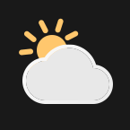

Яндекс Погода
Подключение…
Обновить
Эта кнопка
Под температурой
Как ощущается
Состояние: ясно, дождь, снег
Ничего, крупная иконка
Иконки
Под фон
Для тёмного фона
Для светлого фона
В кружке
Белые плоские
Фон
Прозрачный
Цвет
Цвет фона
Под прозрачный фон можно поставить свою картинку через «Иконку клавиши».
Место
Координаты
Ключи API
По одному на строку
Когда ключ упирается в лимит, плагин берёт следующий. Ключи выдают в
консоли Яндекс Погоды
Обновлять
Раз в час
Каждые 30 минут
Каждые 15 минут